![[Photo of the Author]](../../common/images/Harald-Radke.gif)
por Harald Radke Sobre el autor: Harry estudia informática en la Universidad Tecnológica deAachen, Alemania, desde 1994. Llegó a Linux en 1995. Desde entoncesle anda dando vueltas, sorprendiéndose constantemente de lo buensoftware que es. Programa un poco bajo X, le gustat los temas gráficosy, por supuesto, jugar. Otros hobbies son: los juegos de tablero, leerciencia ficción, tocar (mal) la guitarra, cocinar, practicar Ju-Jutsuy pasar el tiempo con su novia. Contenidos: |
Resumen:
Este es un pequeño repaso al panorama de los juegos bajo Linux. Intentamostrar que en el sistema operativo de Tux hay más que internet oprocesamiento de datos. Actualmente hay mucho que descubrir sobre Linuxy los juegos.
Todos conocemos a Tux, el simpático pingüino de Linux, como un gran trabajador enla comunidad internet. Un montón de sitios web, bases de datos, proveedores de internet,etc. se apoyan en sus hombros. Programas como sendmail, mySQL, ...,corriendo bajo Linux demuestran día a día que este sistema operativo es fiable,rápido y eficiente. Recientemente, Tux ha empezado ha labrar su camino en losescritorios. KDE, GNOME o GIMP son ejemplos de software productivo,con el que el usuario típico es capaz de completar sus tareas diarias. Proporcionancaracterísticas como un interfaz gráfico atractivo que tanto ha sido echado de menosen el pasado. Y ahora hay otro aspecto de Linux que va siendo reconocido lentamentepor los usuarios, la prensa y las empresas: juegos.
Este artículo intenta dar una breve introducción a éste área de Linux. Al final de él encontrarásuna lista de referencias que deberías mirar para obtener información más detallada sobre losjuegos y programas de los que habla el artículo. También se pretende comenzar una nueva categoríaen LinuxFocus, sobre aspectos lúdicos. Pedimos por tanto a los lectores que escriban sobre juegos. Sihas probado varios juegos o ya eres un jugador habitual, comparte tus experiencias con otrosescribiendo un artículo.
| 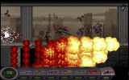 |
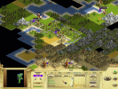 |
Los primeros juegos para Linux fueron aquellos que puedes encontrar bajo casi cualquier otroUnix, por lo que portarlos fue relativamente fácil. También sucedía que los primeros usuarioslos conocián a partir de los sistemas operativos de su trabajo o escuela. Aquellos programaseran juegos simples con gráficos simples o inexistentes, sin comparación con los juegos quetodo el mundo conocía de los PC con DOS o Windows. Las cajas en las que anteriormente corríaUnix eran caras de equipar con hardware gráfico suficiente y sencillamente eran usadas enáreas diferentes del entretenimiento.
Pero, al llegar a los PC caseros, Linux encontró un entorno razonablemente potente y baratopara mostrar más que simple texto o gráficos primitivos. El desarrollo del sistema operativode Tux continuó y hoy día casi cualquier adaptador gráfico se encuentra soportado bajo elsistema X Window. De esta forma se proporcionó un entorno gráfico para bonitas aplicacionesy juegos. Por supuesto que sigue existiendo la consola, no sólo en texto sino con gráficos.Pero la gran mayoría de las aplicaciones que se desarrollan hoy día trabajan bajo X.
El siguiente problema para los programadores fue que X es complejo de progrmar y quelleva un montón de trabajo incluso mostrar una ventana sencilla. De forma que las cosasevolucionaron lentamente. El mismo X usa un montón de recursos del sistema, lo que haceque los juegos sean lentos y bastante sencillos. Pero según el hardware se iba volviendomás y más potente y los precios alcanzaban niveles aceptables, se iba podiendo escribirsofware más exigente. Y con el paso del tiempo, los programadores recibieron ayuda devarias librerías y kits de desarrollo.
Más y más vendedores de esta clase de hardware se dieron cuenta de la importancia de Linuxpara un grupo creciente de dueños de ordenadores, sus clientes. Uno a uno empezaron a proporcionarinformación o drivers, ya fuera en forma binaria o con fuente abierta, para sus productos:adaptadores gráficos, aceleradores 3D y tarjetas de sonido. Hoy día, Linux dispone de soportenativo para multitud de componentes multimedia.
Pero no sólo las empresas de hardware reconocieron a Linux. La industria del juego tambiénse percató de este nuevo sistema operativo. Aunque la mayor parte de los juegos para Linuxeran gratis (p.e. los sujetos a la licencia pública GNU) había algunos juegos comerciales.De esta forma las posibilidades de conseguir entretenimiento de alta calidad en Linuxcrecieron rápidamente. Y aunque algunos podrían pensar que la distribución comercial noencaja bien con el espíritu de un Linux gratuito, yo personalmente considero que el buensoftware siempre puede llevar consigo un precio razonable. Y no deberíamos olvidar que sehace dinero con Linux, tal vez no tanto por vender el software como por ligarlo a hardware(servidores de red) o proporcionar soporte. Esto no se puede hacer con los juegos. Lo únicoque puedes hacer es venderlos, y la presión del software libre puede obligar a las compañíasde juegos no sólo a escribir buen sofware, sino también a hacer cosas realmente atractivaspara lograr que la gente las compre.
| 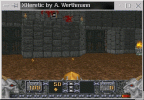 |
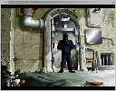 |
Como dijimos antes, los programadores usan una mezcla de toolkits, librerías, kitsde desarrollo (SDKs) e incluso motores de juego completos. Por supuesto, uno puedeusar los conjuntos de widgets para X como qt, gtk, athena, xforms y otros. Estos conjuntos proporcionan una forma cómoda de crearinterfaces de usuario agradables, así como un manejo sencillo de gráficos. Para unagran cantidad de juegos es suficiente. Programas que no realizen multitud de complejasoperaciones gráficas pueden ser escritos de forma bastante fácil y presentar elaspecto que todos conocemos de otras aplicaciones X.
Pero, mientras que juegos como buscaminas, Mahjong o incluso Tetrispueden escribirse con estas librerías, las cosas empeoran si llegamos a los juegos deestrategia en tiempo real como Warcraft o Command & Conquer. Los fusilerosde 3D tratan con texturas agradables, y deben proporcionar una alta velocidad de framespara atar al usuario a la pantalla (imaginemos Unreal o Descent con unoo dos frames por segundo). Para estas necesidades las librerías de widgets de propósitogeneral de X son insuficientes. Afortunadamente hay otras librerías diseñadas paraabordar con fácilidad gráficos veloces y complejos.
En el tema de gráficos 3D, Mesa es la número uno de estas librerías. Mesa es unaimplementación gratuita de OpenGL especialmente diseñada para crear escenas 3D enbase a primitivas sencillas como vértices y polígonos. Uno de los aspectos másimportantes de OpenGL es que existen juegos genéricos que lo usan. Por ello, es posible portarlos a Linux sin necesidad de reescribirlos completamente. Una de las mayores deventajas de Mesa es la ausencia de soporte de hardware de aceleración de gráficos 3D, que es imprescindible para juegos de primera línea con texturas, niebla, alpha blending y cosas similares. Durante un largo tiempo, 3dfx ha sido el único vendedor de hardware que ha proporcionado ejecutables que permitieran acceder a su hardware bajo Mesa. Muchísimas máquinas que no usaban dicho hardware se veían obligadas a usar la propia CPU para realizar los cálculos, lo que reduce drásticamente el rendimiento. Aunque actualmente, muchos usuarios de PC se pueden beneficiar de su hardware 3D desde que NVidia liberó las fuentes para acceder a sus chipsets Riva128/ZX/TNT/TNT2. Y tambíen el Matrox G200 es actualmente soportado por Mesa. Muchas aplicaciones (y juegos) que usan Mesa/OpenGL pueden encontrarse en internet. La mayor parte de sus nombres comienzan con GL.
Hay más liberías y kits de desarrollo de software para temas gráficos, proporcioando el manejo de
eventos que fueren diseñadas para juegos. Una es SDL, escritar por Loki Entertainment.
Loki porta a Linux juegos populares de PC. Han liberado sus librerías y todo el mundo puede usarlas.
Hay listas de correo donde los ususarios y programadores de Loki hablan sobre SDL. Actualmente hay varios juegos desarrollados como fuente abierta y que usan SDL.
Otras librerías, aparte de SDL son: PLib, ClanLib o PowerPakGame SDK.
Pero los juegos necesitan más cosas aparte de gráficos. Hay kits de sonido disponibles para escuchar música y crear efectos sonoros más fácilmente que a través del sistema de sonido bajo Linux (ya sea OSS, ALSA o cualquier otro). ALgunas de las librerías mencionadas que fueron desarrolladas específicamente para el desarrollo de juegos combinan estas características, proporcionando gráficos y sonidos y, en ocasiones, incluso animaciones completas.
Hay otro grupo de asistentes para los creadores de juegos, llamados motores. Estos kits de desarrollo de software intentan cubrir todos los aspectos de un género de juegos e intentan abstraer el proceso de creación del juego de la programación a bajo nivel. Hay motores como Chrystal Space para juegos de acción 3D y aventuras en primera persona, o aquellos para crear juegos de rol (RPGs).
Como puede verse, no hay una librería/API/toolkit estándar como puede ser directX bajo Windows. Esto obliga a los usuarios a hojear los requerimientos del juego para elegir todos los elementos de software que necesita el juego. Y de esta forma, nuestra máquina esta llena con docenas de librerías para estos juegos, sin los que no podemos parar. Por otra parte, la mayoría de las cajas Linux disponen hoy día de discos duros suficientemente grandes para todo este software.
| 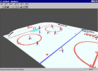 |
Puedes encontrar casi cualquier clase de juego que busques corriendo bajo Linux. Si buscas un entretenimiento rápido durante una pausa en el trabajo, neceistat un juego como buscaminas, tetris, go, ...; O si sientes la necesidad de liberar al planeta de esos horrorosos aliens o robots, tienes doom, heretic, descent. Necesitas algo más sofisticado, como liderar a una tribu desde el comienzo de los tiempos hasta ls cima del mundo?. No hay problema, prueba FreeCiv o Civilisation: Call To Power. ¿Que no tienes carnet de conducir?. Ok, subete al bólido con XRacer o GlRacer. Ya ves, todo está por ahí. La mayor parte de los juegos, al correr bajo Linux, proporcionan capacidad multijugador, lo que hace las cosas incluso más emocionantes
Tal vez ya conocieras algunos de estos juegos, mientras que los otros te resultan totalmente nuevos. Algunos son clones o han sido portados a partir de juegos existentes para PC, o son juegos nuevos de géneros bien conocidos. Los clones son juegos desarrollados desde cero, con sus propios gráficos, sonidos y datos (aunque obviamente son similares a los del programa original) con algunas características más o menos nuevas. FreeCiv es un buen ejemplo. Los juegos portados suelen comportarse exactamente como el original. Aunque la mayor parte se distribuyen de forma completa (como Civilistion: Call To Power), algunos son proyectos que sólo se preocupan por las partes del juego que necesitan ser re-escritas. Descent, Doom , Heretic y ALE Clone son de este tipo. Para jugarlos necesitas disponer de la versión para DOS, que suministra los datos para el juego. Y, por supuesto, están los arcades y juegos de tablero, aventuras, simuladores y demás, que usan reglamentos de juegos existentes (a veces completamente nuevos), y sin ninguna relación con juegos de PC existentes
Bueno, llegados a este punto, es hora de rebajar un poco las expectativas. Hay multitud de projectos sobre juegos ahí fuera. Todo son diferentes respecto a los gráficos y a la calidad del juego. Algunos son complejos, otros simples, todos están en constante desarrollo, tal vez ya son jugables, tal vez no. De modo que no esperemos total satisfacción de todos ellos. Pero, para ser justos, tengamos en cuenta que la mayor parte de ellos son escritos en el tiempo libre del autor, y sin recibir nada por ellos. A menudo estos programadores trabajan por su cuenta, sin ayuda de otros usuarios. Seamos pacientes con juegos sin acabar, con errorres o incluso complicados de instalar. Puedes ayudar al desarrollo informando sobre errores, enviando sugerencias, tal vez incluso creando gráficos y sonido o participando activamente en la programación. Un juego no deja de ser un proyecto de software bajo Linux, que requiere feedback y ayuda.
| 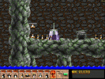 |
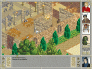 |
Wine permite ejecutar aplicaciones Windows bajo X. Lo mismo puede hacer con tus juegos favoritos. Existen varios informes de historias exitosas al usar varios juegos con wine. Aunque debes ser consciente de que wine , aunque usable, está aún en construccion, y bastante lejos de ser estable, especialmente al llegar a sofware para Win32. Aunque en cualquier caso es útil intentarlo, y es una prueba adiciones de las capacidades que nos da Linux.
| 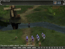 |
El comportamiento del mundo comercial respecto a Linux varía desde la ignorancia absoluta hasta el portar juegos. Incluso hay nuevas empresas fundadas especialmente para escribir juegos para Linux. Unas pocas empresas liberan los códigos fuente de sus productos más viejos, de forma que puedan portarse sin coste. Algunas compañias dejan portar sus juegos, mientras otras planean hacerlo ellas mismas. Algunas dudan, portando tan sólo algunas partes (por ejemplo, el software de servidor en juegos multijugador). Hay peticiones de usuarios en la web, para intentar que las empresas publiquen versiones para Linux de sus juegos. Esta es una buena forma de demostrar que hay un mercado para el software bajo Linux.
Hay todo de todo. La parte comercial es aún muy pequeña, y la mayor parte de los programadores son totalmente nuevos en Linux y el potencial del mercado de Linux aún no les resulta importante. De todas formas, algunos se arriesgan a invertir tiempo y dinero en estos proyectos. Intentemos no sólo desear un final feliz. Si podemos elegir entre la versión corriente y la de Linux, usemos la segunda, incluso aunque la instalación pudiera no ser tan simple y nos resulte algo raro el pagar por software para Linux.
| 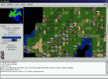 |
De ls misma forma que el desarrollo de juegos seguirá adelante en general, lo mismo pasará con los juegos para Linux. Creo que las diferencias de calidad entre los juegos generales para PC y los juegos para Linux se irá reduciendo poco a poco. Gracias a las empresas comerciales podremos jugar a los mimsmos juegos (bueno, no todos ellos) con la misma calidad y bajo Linux. Finalmente, mi creencia personal es que dependerá de éste escenario (más que de otras áreas) el que Linux se vaya introduciendo en los PC caseros. No solo como un juguete o conviviendo con otro sistema operativo sino como una alternativa real a él.
Y hablando sobre el futuro, planeo escribir algunas revisiones de juegos para LinuxFocus. Aunque, por supuesto, invito a todo el mundo a hacer lo mismo. Creo que este tema es lo bastante interesante como para gastar algún tiempo en el. Siendo honestos, ¿a quien no le gusta jugar? -:
| 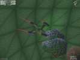 |
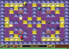 |
|
|
Contactar con el equipo de LinuFocus
© Harald Radke, FDL LinuxFocus.org Pinchar aquí para informar de algún problema o enviar comentarios a LinuxFocus |
Información sobre la traducción:
|
2000-12-01, generated by lfparser version 2.1
{kind=link}
{kind=link}
{kind=link}
{kind=link}
{kind=link}
{kind=link}
{kind=link}
{kind=link}
{kind=link}
{kind=link}
{kind=link}
{kind=link}
{kind=link}
{kind=link}